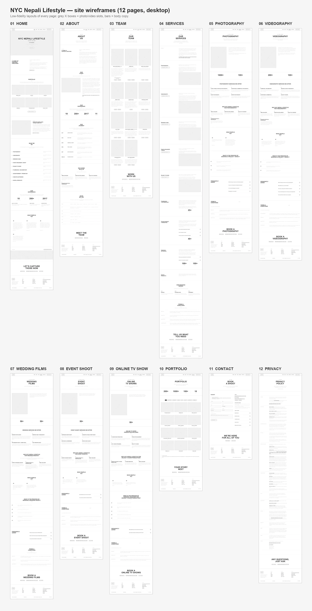

NYC Nepali Lifestyle
The framework for a 12-page photo and film studio site in Queens, from content audit to launch, built so the studio can fill it with its own work.


Design thinking
- 1Empathize
A busy Queens studio with 200+ videos had no website that matched its work.
- 2Define
The copy came in two briefs that contradicted each other, so I turned every conflict into 16 questions for the client.
- 3Ideate
One skeleton for all 12 pages: a bold title, the service story, proof in numbers, then a booking call to action.
- 4Prototype
Version one was editorial white and gold. The client wanted energy, so I rebuilt it as a “night shoot” system on design tokens.
- 5Test
Iterated with the client on colour, four live font pairings and the portfolio grid, and checked all 12 pages at 375px.
200+ videos to its name, but no website that matched the work.
Goal: a 12-page framework the studio owns and fills with its own photos and films.
Site map
- About
- Team
- Servicesphotography, videography, wedding films, event shoot, online TV show
- Portfoliofilters by service
- Contact
- Privacy
- Bold title
- Service story
- Proof in numbers
- Booking CTA
Wireframe
All 12 pages on one sheet. Grey X boxes are photo and video slots, bars are copy.
Click the sheet to see it full size.

User interface
Orange plus teal, the colour grade of cinema, with the orange matched to the client's logo.
A uniform 4:3 portfolio grid with filters by service. Each tile is a labelled slot the studio fills with its own work.


Testing: before and after
Editorial white and gold read as elegant, but the studio wanted energy. Mixed tile sizes in the portfolio looked messy.
A black “night shoot” system with orange display type, fonts chosen from four live mockups (Unbounded + Archivo), and a uniform grid. The restyle never touched the markup.

Design system
Colour
- Ground#000000
- Surface#0B0B0B
- Accent#FF6B1A
- Accent soft#FF8F52
- Secondary#2EC4B6
- Ink#FFFFFF
Type
Built to hand over
- Design tokens
- Labelled 4:3 slots
- Filters by service
- Thumb-sized booking button
- No horizontal scroll at 375px
- 26 KB WebP logo
- Domain moved to client
Outcome
The studio now owns the framework outright, on its own domain and hosting. Showing options beat describing them, and building on tokens made a full rebrand cost one stylesheet.